I'm going to use an image that you will recognise from "Saddletank"'s tutorial on "Creating Small Streams" elsewhere on this tutorial web site, but you can use any image you like whether it's a photograph of a real train or a screenshot in MSTS, a map or any other image.
First we'll start by making a backup of your screen files folder. In Windows Explorer, browse to your /Train Simulator/GUI/Screensfolder and copy the six files above to a sub-folder called, say, Backup.
You'll need an image 800x600 pixels in size and in Windows .BMP format. In addition, you need to look at how the picture is going to be affected by the various MSTS menu overlays. If your photo follows the "rule of thirds" with the focus of attention on the lower left third, you'll achieve an excellent result: I actually chose this image as an example as the train running through fits neatly between the various elements of the splash screen: below I've highlighted the areas you might like to try to avoid:
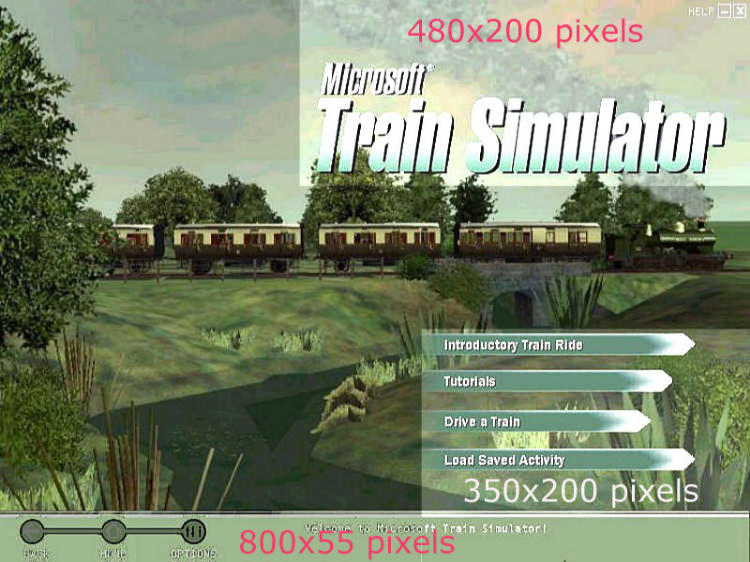
And here's an example using the "rule of thirds" successfully:
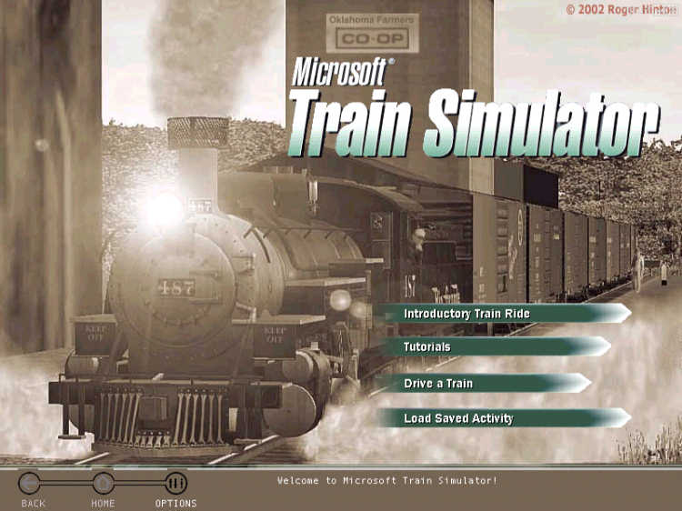
You can select any image you like, even a JPG as a starting point.
Open PSP. Click File | Open. Browse to the file you want and double-click on it.
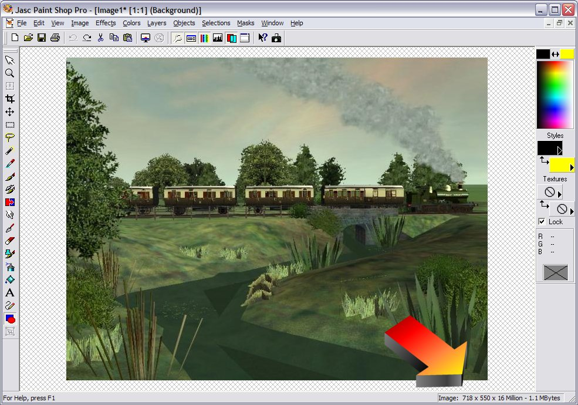
If you've copied it to the clipboard from a web photo or elswhere, you'll need to press Ctrl-V and it will appear in PSP.
The image loads - in this case a .JPG file that's 718x550 pixels in size. Now to change it to want we need - our first step is to resize the image.
Click Image | Resize. The following dialogue box opens:
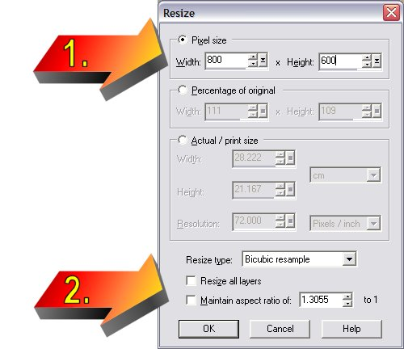
Arrow #1: Change Width to 800, Height to 600 and
Arrow #2: UNCHECK "Maintain aspect ratio..."
Click "ok".
The result is quite acceptable, even though we've stretched the image a little.
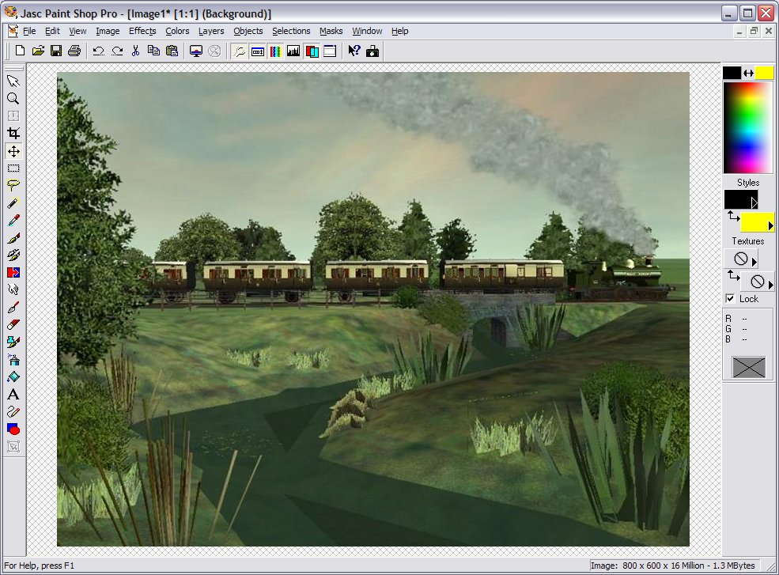
The result is quite acceptable, even though we've stretched the image a little.
Now you're going to make use of the two files that you downloaded in Splash.ZIP above. Extract the two files, Strip.tga and msts_name.tga. I've created these files to for you to use in this tutorial - they're "public domain", so use them as you wish.
Click File | Open. Select "Strip.tga"
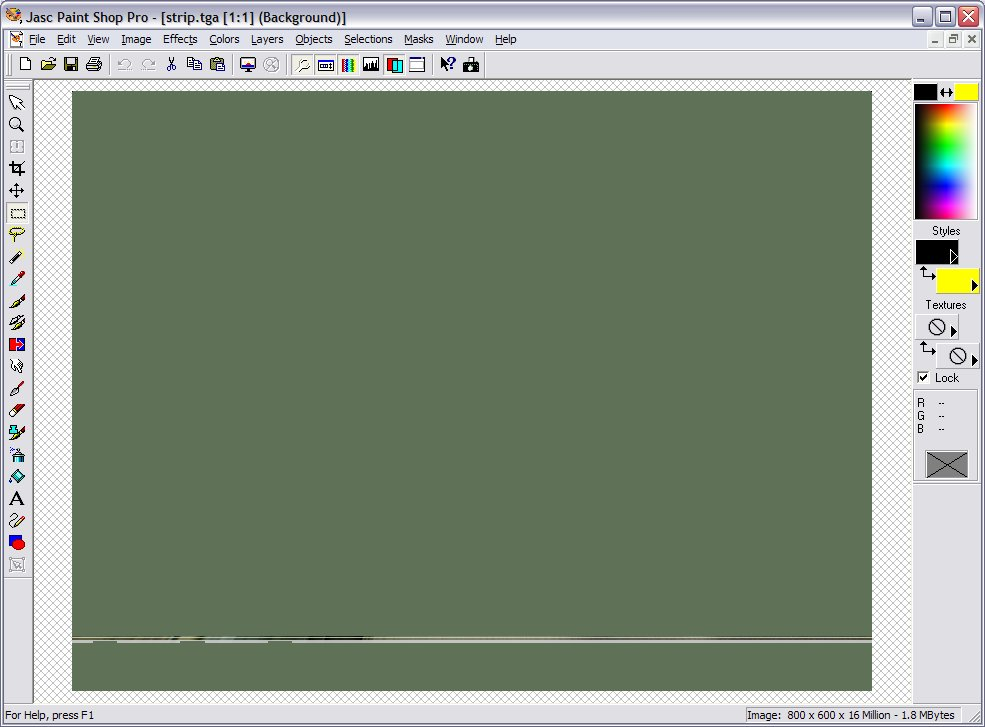
Hmm... pretty underwhelming. Just a green strip measuring 800x55 pixels in an 800x600 otherwise green image. This is going to become the lower menu bar on your splash screen.
Click Masks | Load From Alpha Channel
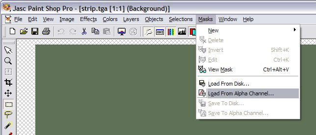
The dialogue box below appears. Click "ok".
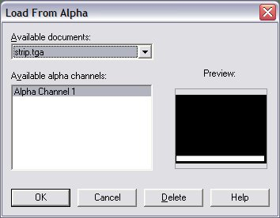
Depending on the transparency colours you've selected in File | Preferences | General Program Preferences | Transparency, you'll get a screen that looks like this:
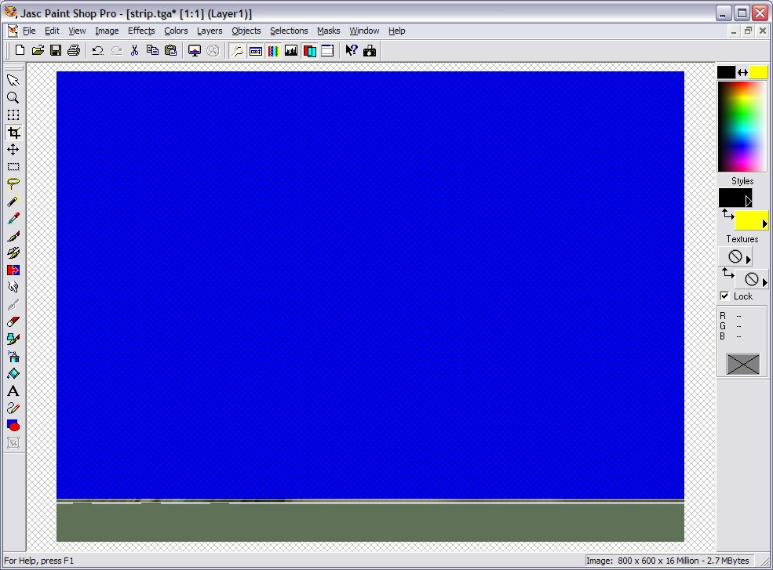
Press "Ctrl-A" then "Ctrl-C" to select and copy this image to the clipboard.
Click Window | Image1 (or whatever your primary file is named).
Your working image should now be on the screen.
Press "Ctrl-L" to paste as a Layer. This is the result.
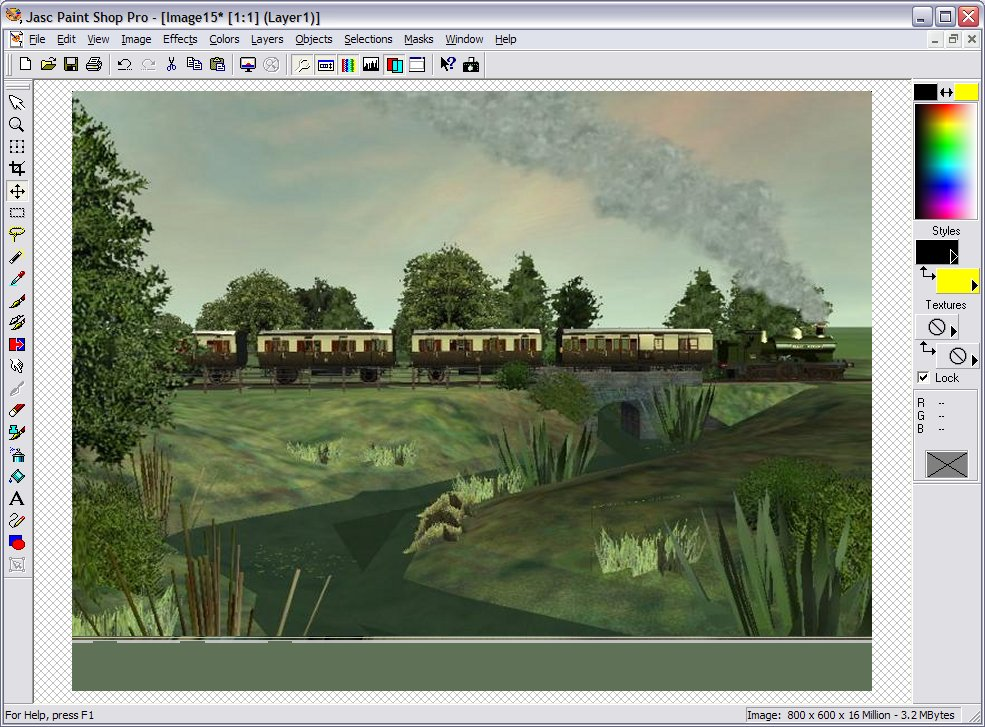
Click on File | Open. Select "msts_name.tga" (the other file from the Splash.zip). The following image appears.
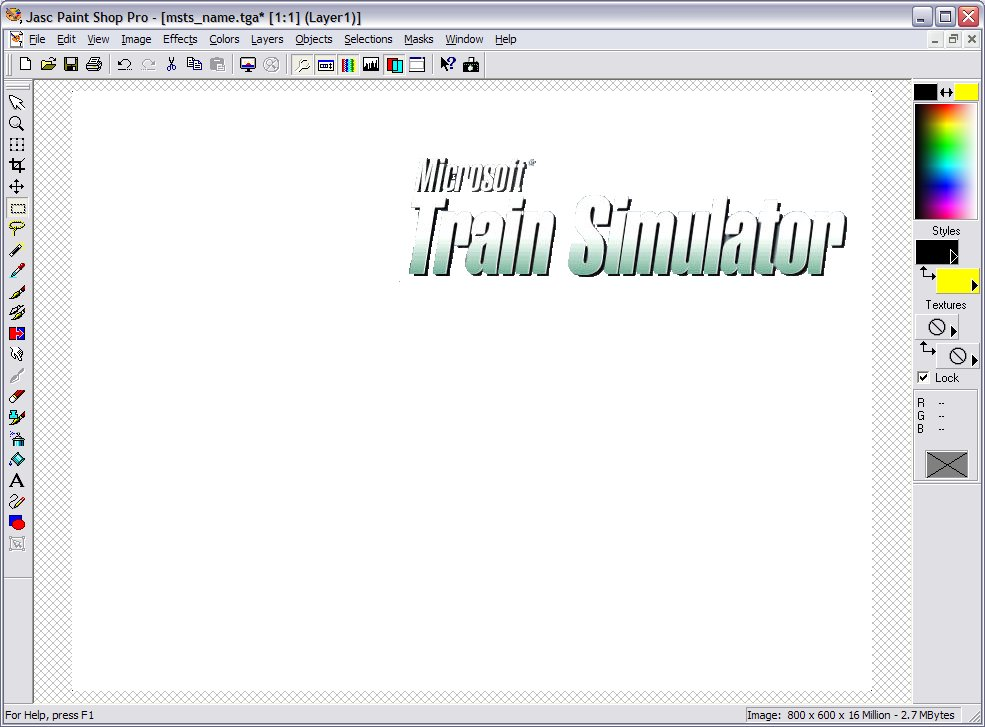
Repeat the steps as for the first image, ie
- Load the Mask;
- Select All then Copy (Ctrl-A then Ctrl-C);
- Move to your primary image and press Ctr-L
and you should have someting that looks like this.......
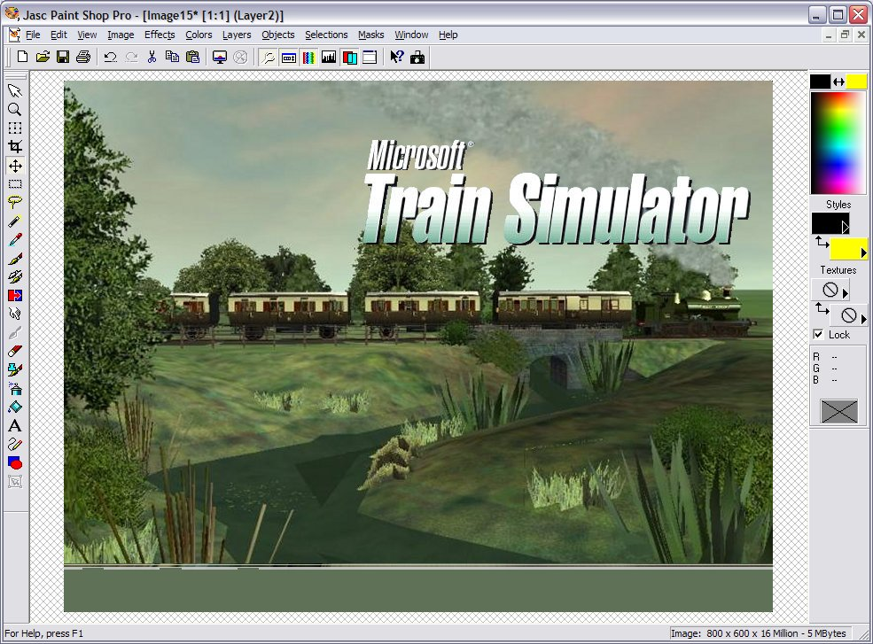
We're into the home straight now.
Click on File | Save. You will be presented with the following dialogue box.
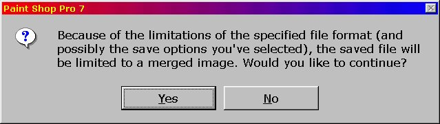
Click on File | Save As. Select a folder, filename and filetype BMP and click "Ok".
As I remarked above, you will need to replace one of the six existing .ACE files. I chose to replace "Odakyu.Ace".
Now open TgaTools2.
File | Load. Browse to the .BMP file you've just created.
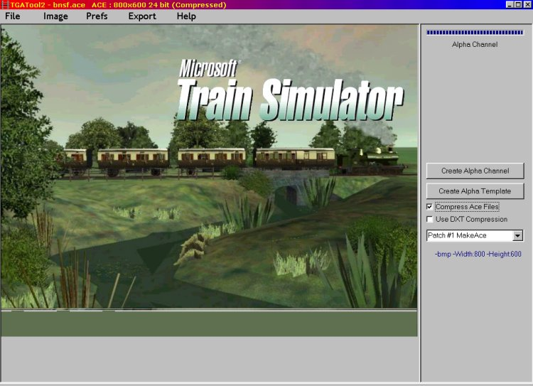
Make sure that "Compress Ace Files" is selected, and that you have selected "Patch #1 MakeAce" in the drop-down box below that.
Click on Export | Ace (no Alpha)
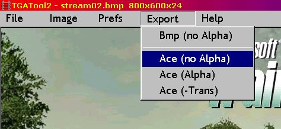
Browse to the Screens folder. Type "Odakyu.Ace" and click "Save".
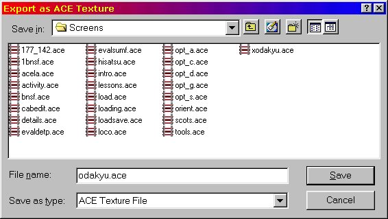